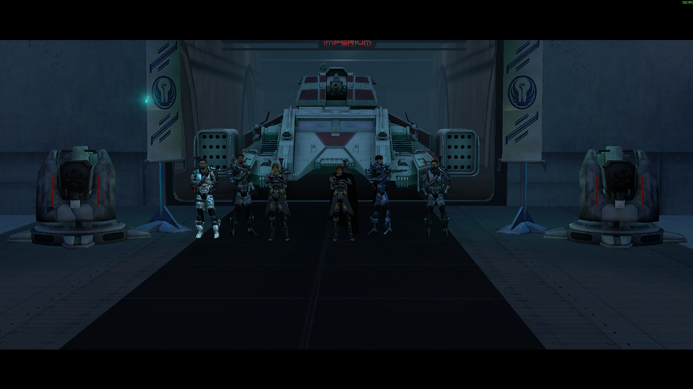
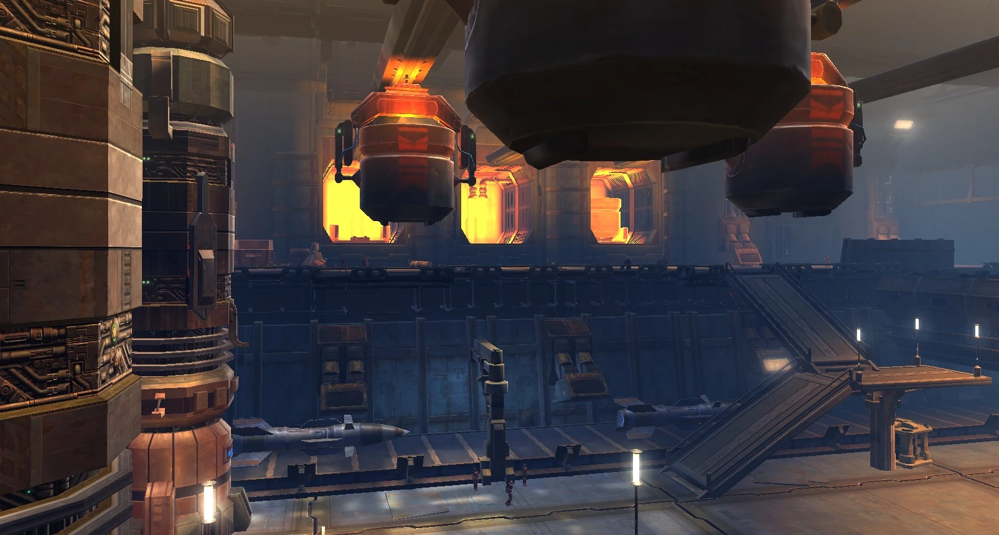
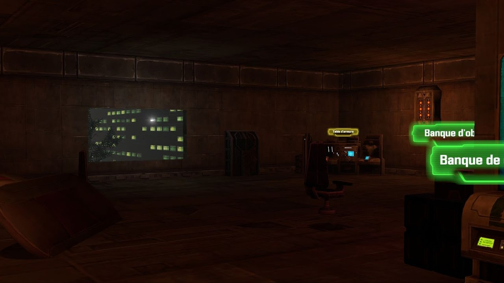
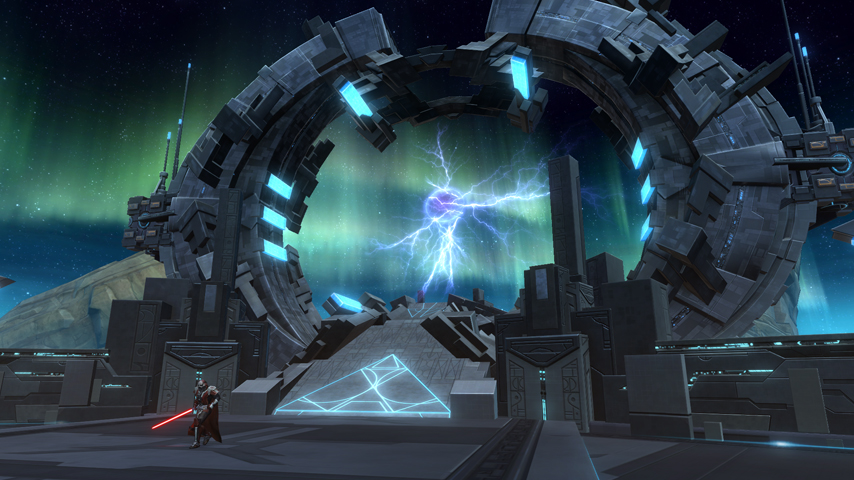
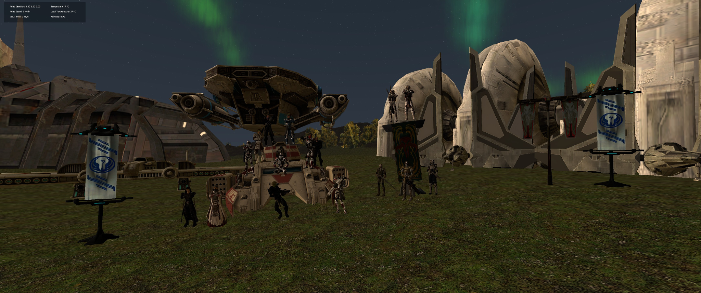

Le front de Vogel fut un des premiers théâtres d'opération du Régiment de Coruscant. Engagé dans une série de combats urbains intenses, le régiment mena des opérations conjointes avec le Maître Kromro et plusieurs Jedi dépêchés sur place pour soutenir la contre-offensive républicaine.
Les Jedi, en coordination avec les unités terrestres du régiment, permirent de reprendre plusieurs quartiers stratégiques d'une des villes sur la ligne de front et d'endiguer les forces impériales dans des zones à haute densité civile.

Actuellement, le Régiment de Coruscant est engagé sur Balmorra, théâtre d'opérations majeures dans la guerre de reconquête républicaine.
Après plusieurs mois de combats, le régiment a pris part à l'assaut de l'usine de Sobrik, un complexe industriel vital utilisé par les forces impériales pour la production d'armement lourd.
Cette opération, menée en coordination étroite avec un contingent Jedi, fut une victoire décisive : la neutralisation des défenses automatiques, suivie d'un assaut combiné blindé et Jedi, permit de sécuriser entièrement le site.
Les Jedi ont agi aux côtés des compagnies d'assaut du Régiment, menant les troupes à travers les lignes ennemies dans une démonstration de force et de cohésion.

Le Sergent-Chef Sneed Reeves du Régiment de Coruscant fut capturé par l'organisation criminelle connue sous le nom de l'Œil d'Azalus.
Un assaut conjoint entre les forces républicaines et un détachement Jedi fut lancé pour tenter de le libérer. Au cours de l'opération, Reeves fut exécuté par ses ravisseurs avant que les troupes ne puissent atteindre sa position.
La base fut ensuite prise et sécurisée. En reconnaissance de son courage et de son dévouement exemplaire, Sneed Reeves fut promu au grade d'Enseigne et décoré à titre posthume lors d'une cérémonie sur Ord Mantell.
Sa mémoire demeure un symbole d'honneur au sein du Régiment de Coruscant.

Lors des derniers évènements concernant les hyperportes, les forces armées de l'ancien régiment de Coruscant ont participé à la fermeture de cette dernière.
Nombreux des membres du régiment furent présents lors du sacrifice de Zayel Yra Vinya-Sa, ce dernier donna sa vie et son corps pour permettre la fermeture définitive de ces portes sauvant ainsi un nombre incalculable de vie.

Alors que la Guerre entre la République et l'Empire continue de faire rage, sur la planète Ord Mantell un autre front est ouvert entre la République et les Séparatistes, un groupe voulant renverser le gouvernement républicain.
Après des années de guerre, le Major Rogal Dorn lance la Campagne de Ord Mantell pour reprendre complètement le contrôle de la planète.
Il ordonna le regroupement de toutes les forces du Corps d'armée et grâce à ses liens avec le Clan Mandalorien Var'kan, le Major a pu regrouper une force armée conséquente.
Après un débarquement sur les plages de Ord Mantell, le Major et les forces alliées ont pu établir une tête de pont, fragilisant assez les séparatistes pour permettre aux Républicains de reprendre le dessus et de libérer la planète plusieurs années plus tard.